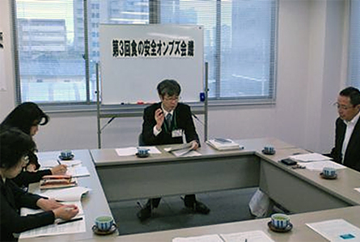

10月23日（木）、今年度第3回食の安全オンブズ会議が埼玉県生協連会議室で開かれました。当日は、3団体と事務局の5人が出席しました。

1．埼玉県の食品安全をふりかえる学習会
今年度の活動計画として掲げた「埼玉県食の安全・安心の確保に関する基本方針」その施策の実施状況を学ぶ学習会を開催しました。講師には、埼玉県食品安全課安全推進担当の山内隆さんをお迎えしました。
県民の利益のためには一貫できる体制が必要
食品安全局は2002年4月に誕生しました。きっかけの一つはBSE問題。検査をする部署と規制をする部署が別々で縦割りの弊害がありました。県民の利益のためには、それぞれの部署を一体化し、一貫できる体制づくりが必要でした。その結果、保健医療部と農林部を横断し一元的に取り組む食品安全局が設置されました。
食品安全局長のもと、保健医療部食品安全課・農林部農産物3安全課・農林部畜産安全課の3課50人が食品安全のための仕事をおこなっています。最近の事例では、連携して県内農産物の残留農薬スクリーニング検査をおこなっています。
埼玉県食の安全・安心条例の制定とあらたな基本方針の策定
2004年8月、埼玉県の食の安全・安心の確保に関する基本姿勢の明確化、県・事業者・県民の責務、役割、取り組みを規定するなど、理念を表す条例として「食の安全・安心条例」を制定しました。
特徴としては、県民参画と関係団体との協働、食育などによる知識の普及啓発などがあります。こうした埼玉県の動きが全国に波及していきました。
条例制定を受け、2000年に策定された基本方針を見直し、2007年には、食の安全・安心に関する基本的な施策を明らかにする、あらたな基本方針が策定されました。
※報告を受けて、次のような質疑がありました（抜粋、→は回答）。
Q．スクリーニング検査の検査数と費用の負担方法はどうなっていますか
→年間で300検体の計画ですすめています。費用は埼玉県が負担しています。
Q．食品安全局の中の連携はどのようにしているのですか
→会議よりも日常的なつながりを大切にし、食品安全確保をすすめています。
2．各団体取り組み交流
参加団体より、産地視察・商品展示会などの取り組みについて報告がありました。